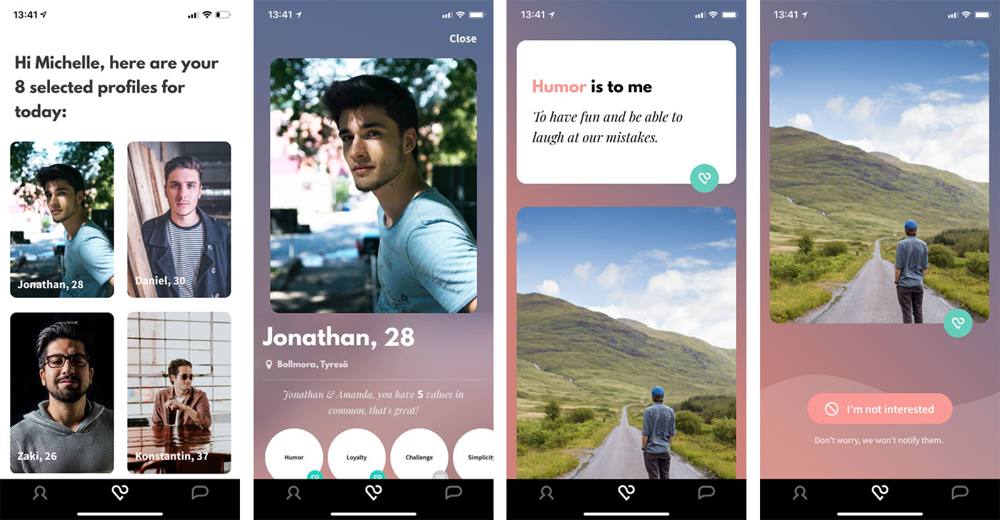

Client: Relate, a dating app for meaningful relationships launched in 2019
Goal: To increase user retention by improving the matching experience in the app My role: UX designer & researcher
My role: UX designer & researcher
Research shows that couples who share the same values are more likely to have long term and meaningful relationships. In Relate users are matched based on their values.
Current flow of Relate:
We interviewed six men and women who were tired of swiping and ready to settle down about dating. Then we asked them to download Relate and observed them during the onboarding.
My role was to design and lead the research, which meant identifying what we wanted to know, create a screener for recruitment and write interview questions. We took turns in the team to be interviewer or note-taker.
We gathered our insights in an affinity diagram.We found three major issues in the first round of interviews:
Sharing the initial insights with our client, we decided to focus on making the profiles feel more personal, in hope it would lead to more meaningful matches, which would lead to increased user retention.
In preparation for our follow-up interviews we created three quick prototypes.
My role was to turn the ideas from the team into prototypes. I sketched and did several iterations through fast and informal tests. This way we quickly learned what worked and what didn’t.
Having five out of eighteen values in common with a stranger doesn’t say anything about how well you will get along. Therefore we wanted to see what happened when we decreased number of values in a profile from eighteen to six. We also wanted to make the onboarding feel less overwhelming and offer more insight and reflection.
“Wait! Are these my values? Can I take a picture of this? I need to reflect on this afterwards.”
We found out:
- woman, 25
- That 40 values (instead of 120 values) is a big enough pool to choose from
- Having to prioritise one value over the other forced the user to self reflection
- Getting a top six list felt really valuable (unlike the unsorted value tree of eighteen values)
We wanted to find out what was missing in the profiles they were browsing. Which information did they want? And why?
Our method was to let users create their own dream profile with pen, paper, scissors and glue. Current elements of the profiles together with some new elements were sketched on paper for the users to cut out.
We found out:
We tried different ways of aiding the users to add more information about their values.
We found out:
We realised the problem was bigger than the profiles not feeling personal enough, people were not acting personal enough.
We made another affinity diagram, answering the question: Why doesn’t the profiles feel personal in Relate today? After meeting our six testers a second time and trying the prototypes on them, we gathered enough knowledge to put into a detailed customer journey map.The browsing was difficult to navigate, which made some new users decline all potential matches by mistake. The consequence was they didn’t have anything to do in Relate until the next day when they would be presented with five new profiles. It could take two to three days for a user to get their first match! This made some of our testers delete the app within the first week.
“I’m sorry I deleted the app!”
- woman, 25, during follow-up interview after a week
The browsing had implications not only on how users perceive the app, it also had implications on how users acted towards other users in the app. As the browsing felt stressful, it encouraged an impersonal behaviour of just writing “hi” to not “lose” the match forever.
“I took the time to write something personal about me, and all I got was ‘hi.’ I’m so disappointed. I’m not going to answer her. Can I uninstall the app now?”
- man, 33, during follow-up interview after a week
Browsing before:
Browsing after:
The improved flow was implemented in January 2020.
Zooming out from the usability issues there is a problem of how the service is designed. People who have the same values are more likely to have a meaningful relationship, then the service could be to only present profiles that Relate knows would be a good match. Perhaps it would be better to only get one or two profiles per month, but that they were really good matches according to an improved matching algorithm?
The service today tries to bypass the period of flirting when forming a relationship, and tries to force a conversation about values before the relationship is ready. A better service would let the matching algorithm work in the background, and when the relationship is mature enough, the service could help them to start talking about their values. It could be reminders and different questions they could answer together. The next step would be to research: when is the earliest possible time for a newly formed couple to start talking about values?